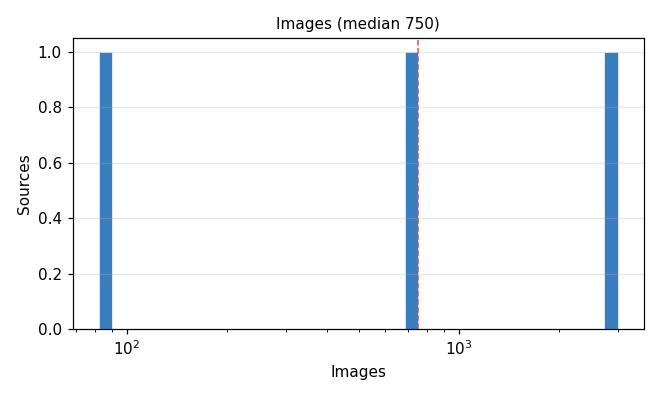
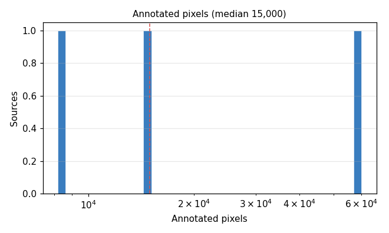
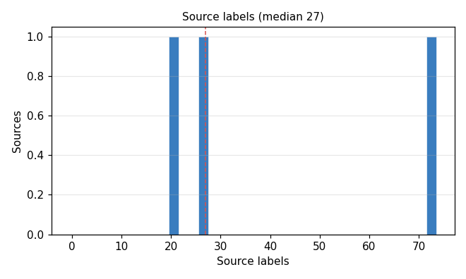
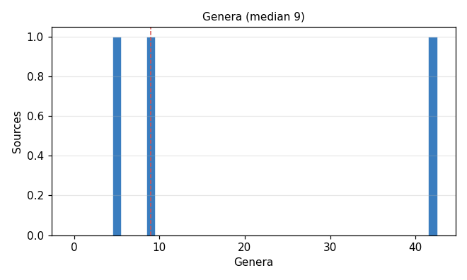
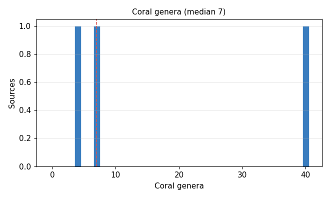
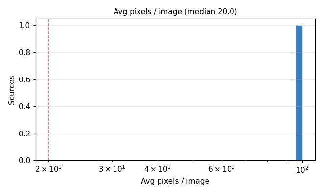

3 sources, 3,832 images, 83,200 annotated pixels (one per point). Manifest: etl-outputs/coralnet/20260623_nogit/coralnet_training_manifest_20260623_nogit.parquet. Genera and coral genera (hexacorallia + octocorallia) come from configs/class_to_concepts.csv.






| Source | Split | Images | Annotated pixels | Source labels | Genera | Coral genera | Avg pixels / image | % pixels genus-level | % pixels unmapped | CoralNet |
|---|---|---|---|---|---|---|---|---|---|---|
| s1645 | val | 3,000 | 60,000 | 72 | 42 | 40 | 20.0 | 19.0 | 0.0 | coralnet.ai |
| s23 | train | 750 | 15,000 | 20 | 5 | 4 | 20.0 | 1.1 | 2.5 | coralnet.ai |
| s57 | train | 82 | 8,200 | 27 | 9 | 7 | 100.0 | 28.1 | 2.0 | coralnet.ai |